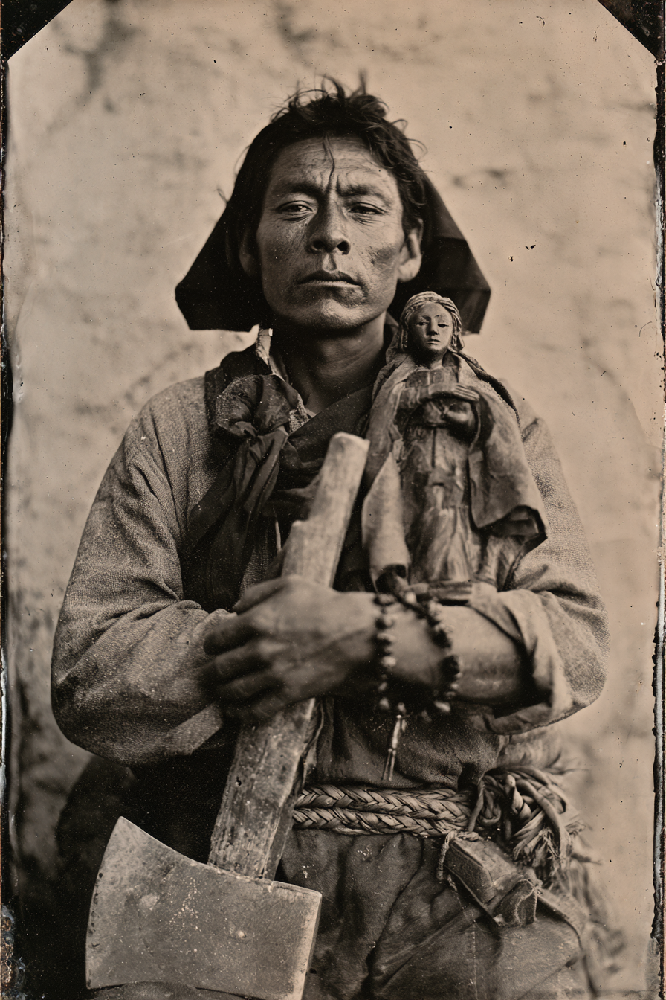

Archetyp: BLESSED (Gesegnete)
Ein exkommunizierter Penitente, der Särge baut, eine Geißel trägt und nicht mehr sicher ist, ob das Letzte, was er tötete, ein Monster war oder sein Bruder.
| Agility | d6 | 1 |
| Smarts | d4 | 0 |
| Spirit | d8 | 2 |
| Strength | d6 | 1 |
| Vigor | d6 | 1 |
| Skill | Attr. | Die | Pts. |
|---|---|---|---|
| Faith | Spi | d8 | 3 |
| Fighting | Agi | d8 | 4 |
| Athletics | Agi | d6 | 1 |
| Notice | Sma | d6 | 2 |
| Shooting | Agi | d4 | 1 |
| Occult | Sma | d4 | 1 |
Hintergrund. Sixtos Leute bewirtschaften das Mora-Tal, seit es die Vereinigten Staaten gab, die 1846 dort ankamen, und er wuchs in der morada auf — dem fensterlosen Lehmkapitelhaus der Hermanos de Nuestro Padre Jesús Nazareno, der Laienbruderschaft der Büßer, die der Erzbischof in Santa Fe seit zwanzig Jahren zu unterdrücken versucht. Er ist carpintero: er baute die Dachbalken der morada, die carretas de la muerte und jeden Sarg in drei Dörfern. Im Frühjahr ’82 kam sein jüngerer Bruder Onésimo acht Tage nach seiner Beerdigung aus den Raton-Minen nach Hause, roch nach Verwesung und sprach freundlich mit einer Stimme, die nicht ganz die seine war — und Sixto nahm eine Breitaxt und tötete ihn auf dem Kirchhof. Der Glaube verließ ihn für ein Jahr. Er ging auf Knien zum Santuario von Chimayó, und eines Morgens bei Truchas wirkten die Gebete wieder — was er nicht für Vergebung hält, sondern für eine offene Rechnung, die fällig wird.
Build. Geschicklichkeit W6, Verstand W4, Willenskraft W8, Stärke W6, Konstitution W6 · Parade 6, Robustheit 5 Glaube W8, Kämpfen W8, Schießen W4, Athletik W6, Bemerken W6, Okkultismus W4 Talente: Arcane Background (Blessed), Champion (Vorkämpfer — +2 Schaden gegen übernatürlich Böses; braucht keinen arkanen Hintergrund), Grit (Mumm) Handicaps: Vow (Gelübde) — Major: an die Hermandad. Er muss zur Tinieblas jeder Karwoche in der morada sein, egal wo er ist und was geschieht, und jede Buße annehmen, die der Hermano Mayor ihm auferlegt. · Outsider (Außenseiter) — Minor · Talisman — Minor Mächte (15 MP): Heiliges Symbol (Pflicht), Waffe verbessern (Smite), Abstumpfen (Numb) — Trappings: kein Licht, kein Glühen. Waffe verbessern ist die Axt, die kalt wird. Abstumpfen ist Sixto, der leise den alabado anstimmt — die unbegleitete Totenklage der Brüder aus der Karwochenprozession — und der Schmerz im Raum hört einfach auf, ein Argument zu sein. Die elegante Falle: sein handgeschnitzter Bulto von Nuestro Padre Jesús Nazareno ist zugleich Talisman und heiliges Symbol. Verliert er ihn, kassiert er −1 auf jede Glaube-Probe und weitere −2 auf Heiliges Symbol mangels ordentlichem Symbol. Gegner, die das durchschauen, greifen nach dem Santo, nicht nach dem Mann. Ausrüstung: der dreißig Zentimeter hohe Bulto, schwarzhaarig, in einer echten Stoffrobe, die seine Mutter genäht hat; eine disciplina, die geflochtene Yuccafaser-Geißel, deren Blut nicht immer alt ist; eine Sargmacher-Breitaxt (St+W6); ein Bowiemesser; eine gekürzte 12er; ein Rosenkranz aus Piñon-Kernen; die schwarze Kapuze; Hobel, Stemmeisen und Wetzstein; ein Maultier und ein Handkarren mit gesägtem Kiefernholz, denn er nimmt die Arbeit noch an.
Aufhänger — seine Lieblingssünde. Sixtos Versuchung sitzt auf der Todsünden-Zeile: Töten außer in Notwehr. Sein Problem ist nicht Blutrausch, sondern Arithmetik. Er glaubt, Leiden erkaufe Gnade, und folglich, dass eine Schuld dieser Größe nur beglichen werden kann, indem jemand vernichtet wird — und es steht immer jemand in der Nähe, der es offensichtlich mehr verdient, als Sixto es verdient, weiterzuatmen. Er will nicht kämpfen. Er will zu Ende bringen, und der Unterschied zwischen einen Mann aufhalten und einen Mann erledigen ist eine Runde Selbstbeherrschung, an der er schon einmal gescheitert ist. Sein dunkles Geheimnis ist, dass er nicht weiß, ob er auch damals scheiterte. Onésimo sprach auf dem Kirchhof mit ihm. Er sagte Sixtos Namen und bat um Wasser. Der Glaube kam danach zurück, und Sixto konnte nie entscheiden, ob das heißt, dass er ein Monster tötete oder seinen Bruder ermordete und trotzdem Vergebung fand — und die Möglichkeit, dass Gott Onésimos Tod schlicht nicht für gewichtig genug hielt, um ein Wunder dafür zurückzuziehen, ist der Gedanke, der ihn wach hält.
Warum es Spaß macht. Du bist der Mann, den die Posse auf den Friedhof richtet: eine Axt, die 2W6+4 gegen alles Unheilige macht, und eine Aura, mit der die ganze Gruppe ihre Schmerzen ignoriert. Und jede Sitzung bekommst du eine wirklich gefährliche Entscheidung — der Bandit kniet, die Axt ist schon oben, und alle am Tisch wissen, dass Heilung, Abstumpfen und heiliges Symbol dunkel werden, wenn du zuschlägst.
Regelgrundlage: Regelnotizen · Archetyp-Notizen